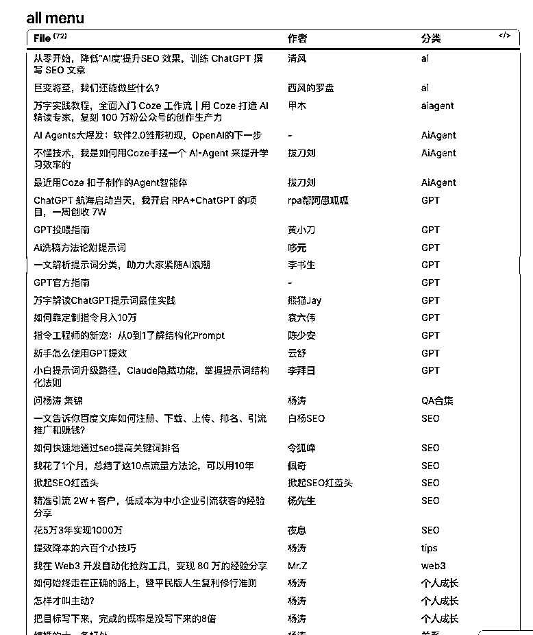
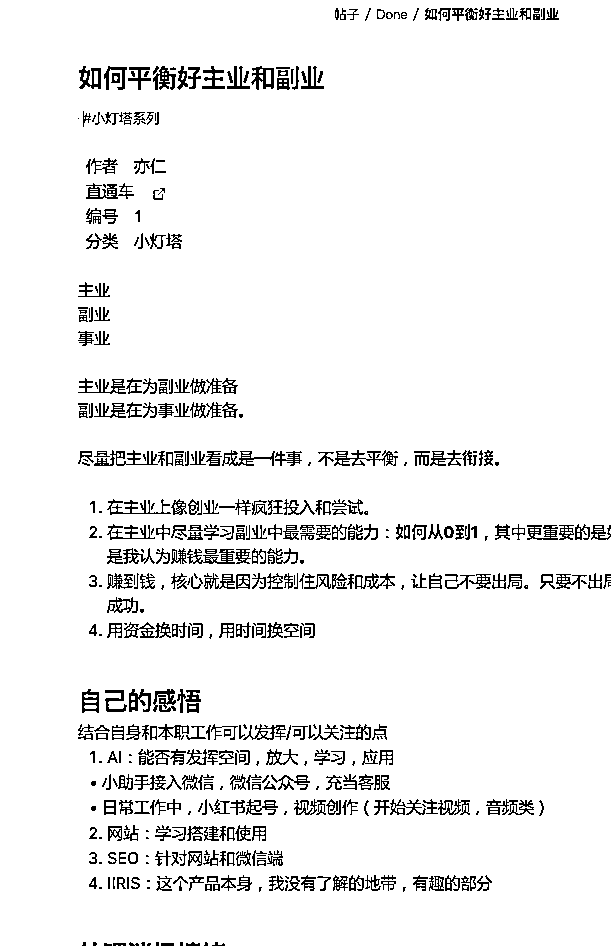
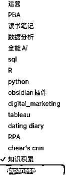
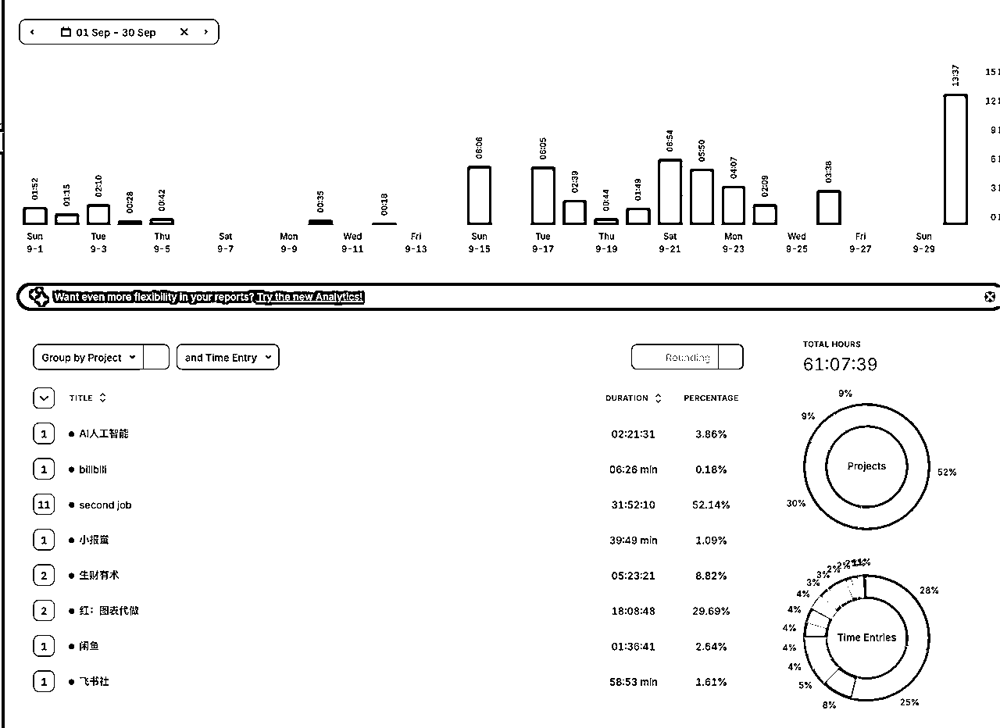
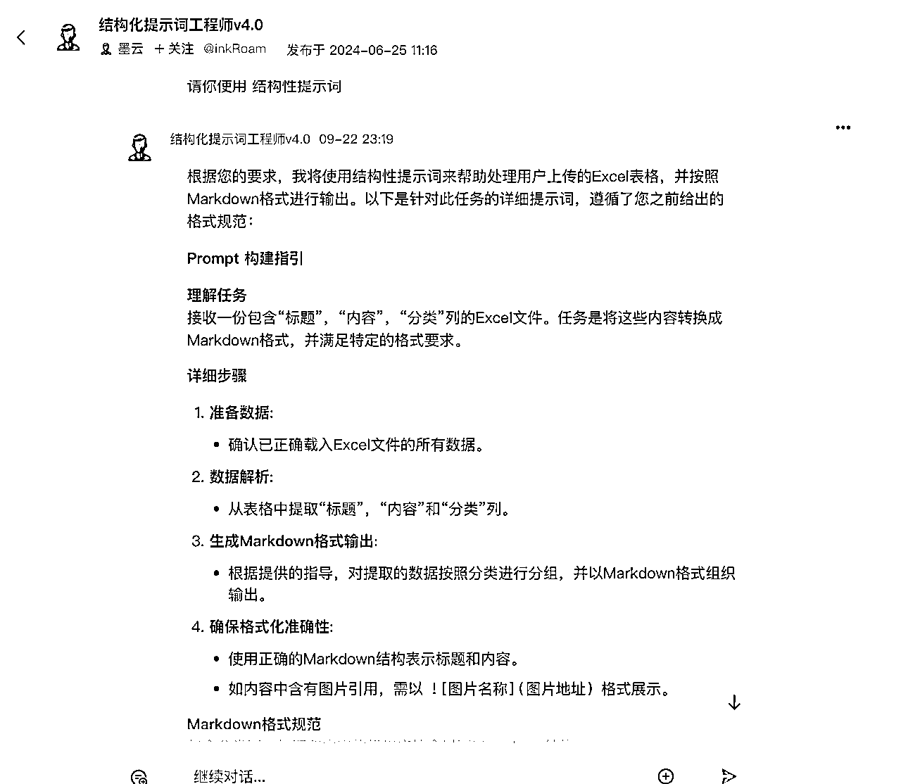
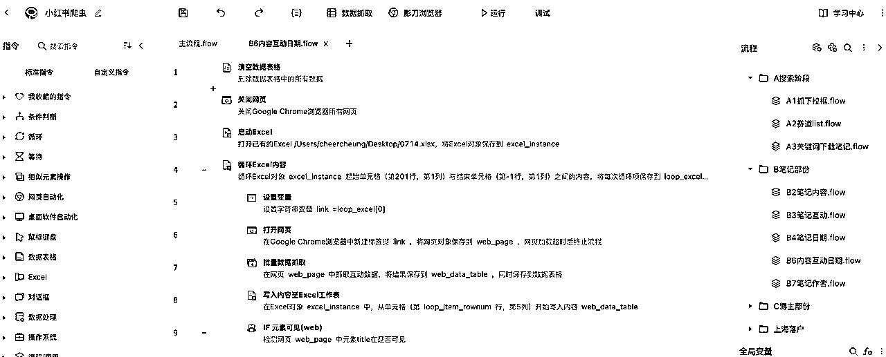
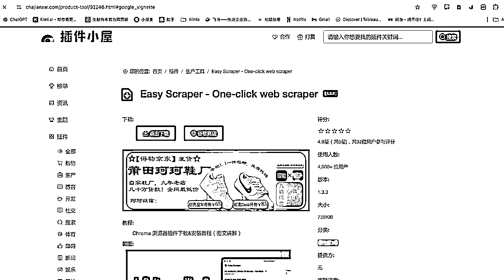
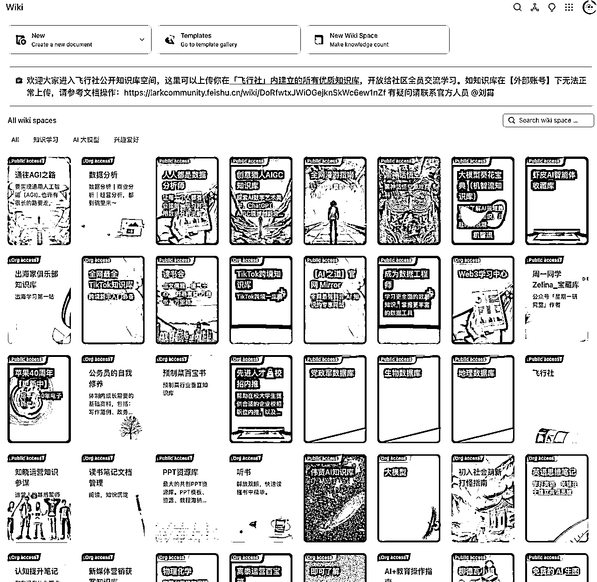
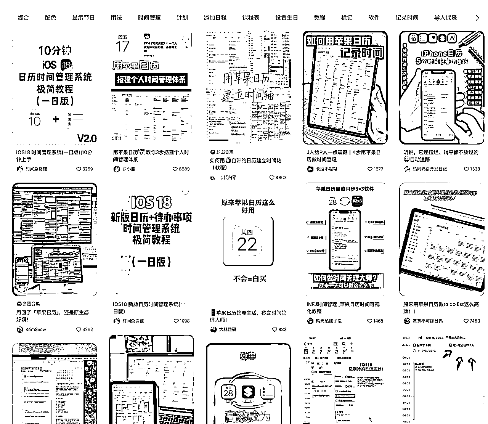
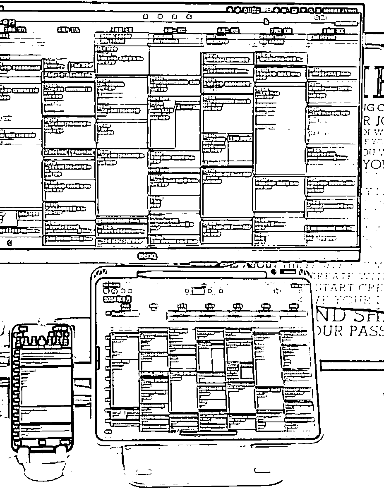

来源：https://ewtk6agpo4c.feishu.cn/docx/Mv4hd5YLNo0Gx1xLTyRcDHtonYu
About me
Name 称呼
阿悦，悦悦，小悦，大悦，Cheer......
名字千千万，跟我的个性一样，总得自己是有人格分裂，非常多面！
Fixed labels 不轻易改变的标签
🌈性别女，爱好男
♒️98年生人，爱自由的水瓶座
🐮具备社牛属性但不爱社交的INFJ
Other labels 总有一个会被你记住
知识区
B站UP主
AIGC创作者
小红书博主
超强执行力
严谨逻辑思维
拥抱多样性
快速适应环境
打破常规
新时代女性
独立且坚定
美貌与智慧并存
牛马
可视化设计师
数据分析师
外企MKTer
虽然说没有做市场的充分研究，但是下面作为一名重度工具人每一个工具都是悦悦子用到烂的那种，离开了工具，我就是个废物。
直通车：https://obsidian.md/



一个基于本地端的知识库，现在基本我所有的内容都会在obsidian里面写，方便搜索，且不会泄漏！
无论是我生财的精华贴阅读，新媒体运营记录，还是python 爬虫，我都建立了不同的知识库。（甚至开了一个dating diary记录我的约会，好久没更新了）
obsidian是知识库管理的工具之一，我看了一下整个生财关于obsidian详细的实操内容并不多，所以后续准备自己写一个我是怎么用的。
直通车：https://track.toggl.com/

时间追踪工具，我用的是电脑端，移动端的 用的比较少，主要是用于记录自己做各种事儿的时间，尤其是副业的时间用于计算自己的时薪。同时每周定期回顾，自己的时间分配都花到哪里去了，也有助于自己对抗虚无感！
ChatGPT：他是我的外籍员工，每一件事儿都离不开他，一个月30天，24小时不休息的替我工作，绝不抱怨的员工，去哪里找！
KiMi：我给我办公室同事推荐的是我的国产员工kimi，也是不错的，门槛低，也不算太傻
秘塔：学术搜索ai，每次需要有reference的时候就一定会使用这个，比起gpt胡说八道，这个更可靠。所以我一般使用是用秘塔搜索知识作为背景or知识库输入给gpt然后进行下一步
国内版： https://www.coze.cn/home
国际版：https://www.coze.com/

结构化提示词，我直接把web保存为app，存在桌面上，需要用的时候就打开。我目前还是比较old school，问gpt之前一定会先写提示词，我有自己的sop，具体可以看这篇《多工具结合使用才是YYDS》
里面还有很多其他的ai agent，挺有意思的 按需使用
直通车：https://www.yingdao.com/

RPA让我实现了无痛爬取小红书，直接把对标分析的门槛降到了最低，上手很快，我大概是 学了2周，每天投入4小时。就做了爬小红书所有内容的程序。
影刀社区还有很多其他的公开程序，自动发消息等等。我是mac版本，阉割了很多功能，如果是win，那会更加的宝藏，学起来真的很快！
easy scraper 下载连接

怎么说呢，不论是小白还是大神，这款工具，真的太绝了！
一键下载小红书热门帖子！太绝了真的！
我的小红书爬虫就是结合RPA+插件+python清晰数据
飞书是加入生财以后才开始用的，因为也是markdown语言，所以上手会比较快。当然我想推荐的是，飞书社这个知识库！飞书好像自己也在推，里面的开源社区和干货内容真的超乎我想象，震惊到我投入一天一夜写下这篇

飞行社我觉得勉强算一个互联网冲浪和链接人的工具吧。
最近在写自己的“个人说明书”，如果没有公众号，那么用飞书写一个“自我介绍”/“简历”/“人类使用说明书”也是不错的选择诶！
我是结合siri使用，直接“hey siri，上午9点半点提醒10点钟我跟上海人开会”，然后9点半，我的电脑就会自动弹出reminder的信息，告知我10点要开会。因为记性特别差，所以我总是唤醒siri，做一个提醒事项。（后来办公室的人都跟我一样开始用这种方式了，苹果生态的体验真的会拉满，因为在办公室用mac的时间会比手机多）
可以说是我的随手记，市面上有很多app，挺多功能的，但是我还是钟意原生态，很多人其实都忽略了备忘录（小红书搜索 iPhone备忘录，你会震惊 错过一个亿啊）竟然有这么多功能都没使用过

用mac或者ipad人会好很多，被人忽略的时间管理工具！

感觉我用的频率最高的就是这些了，包括现在这些文字都是在obsidian里面打出来 然后 上传飞书排版的～
希望大家能喜欢，老板给原文点个赞呗❤️